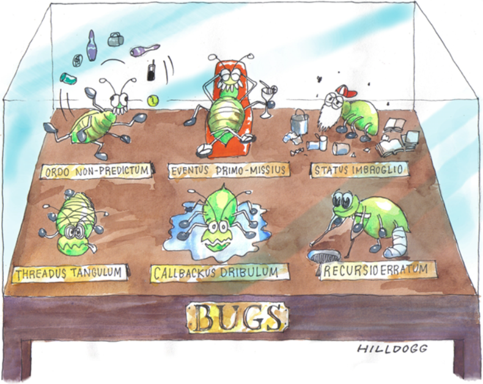
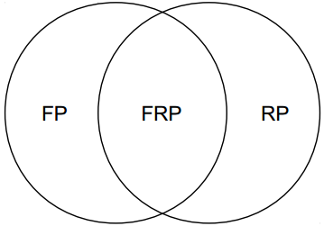
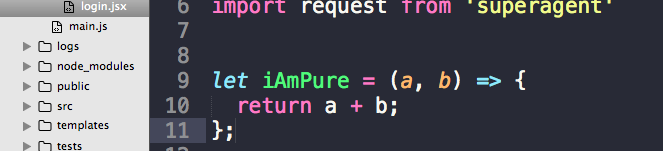
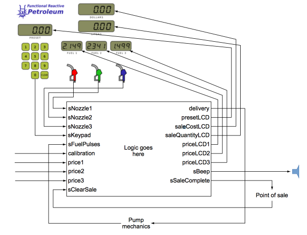

Functional Reactive Programming
a new way to deals with complexity
Lex Huang, Mar 2018
WARNING
Here is a simple introduction to
Functional Reactive Programming (FRP), we won't go deeper into the mathematical theories behind
the paradigm or explain the different implementations or types of it.
Note that FRP fits some problems better than others. User interfaces and networking are two event-based
areas where it fits especially well. Not surprisingly, FRP is excellent for web applications. For
other situations, other paradigms like actor model would be more suitable.
Let's start with a question
How to enhance progressively from left to right?
Project, meet complexity wall...
Simple things taking too long.
Rewritten from scratch!
And a million dollars later...
It hits the same wall again!
What goes wrong?
The State machines are great
The old school state machine works in the following way:
- An input event comes into the system.
- The program logic makes decisions based on the input event and the current program state.
- The program logic changes the program state.
- The program logic may also produce output.
We could say that all programs are fundamentally state machines.
but...
codes written in a traditional state-machine style tends to be unreadable and brittle.
codes become hard to reason about as the program goes bigger.
And a programmer’s main task is to structure clean codes.
Observer-pattern saves the day!
But wait...
When State gets messy...
KEEP CALM and REBOOT.
CTRL+ALT+DELETE fixes everything.
If all else fails, RESTART.
Still not work?
Restart the world!
Here comes the functional reactive programming (frp)
A specific method of reactive programming that enforces the rules of functional programming, particularly the property of compositionality.
Conal Elliott is one of the inventors of FRP, this concept was first introduced in his paper Functional Reactive Animation to composing richly interactive, multi-media animations.
Core Pieces:
Cells: Continuous values over time
Streams: Discrete events pushed into the graph.
Declarative combinators that guarantee sensible composition.
Cell
const num: new Cell<number>(1);
const doubled = num.map(n => n * 2);
// <Cell<A>>.lift( b: Cell<B>, (A, B) => C): Cell<C>
const added = num.lift( doubled, (n, d) => n + d);
Always has a value
Streams
const nums: new StreamSink<number>();
const doubled: Stream<number> = num.map(n => n * 2);
const evens: Stream<number> = num.filter(n => n % 2 === 0);
nums.send(2);
Fires at discrete points in time with a value.
I've heard 2 names of different programming paradigms!
FRP is a subset of both functional and reactive programming.
What is reactive programming
A broad term meaning that a program is
- event-based,
- acts in response to input, and
- is viewed as a flow of data, instead of the traditional flow of control.
It doesn’t dictate any specific method of achieving these aims. Reactive programming gives looser coupling between program components, so the code is more modular.
Microsoft’s Reactive Extensions ( Rx) is mostly concerned with chaining event handlers, and it gives you many options for how you do it.
What is functional-programming
A style or paradigm of programming based on functions, in the mathematical sense of the word. It deliberately avoids shared mutable state, so it implies the use of immutable data structures, and it emphasizes Compositionality and Referential transparency
what's the compositionality
The principle of compositionality:
The meaning of an expression is determined by the meanings of its parts and the rules used to combine them.
how does compositionality help
Without compositionality, the consequences of composing program modules are ad hoc.
FRP is compositional because it imposes mathematical rules that force the interaction of program elements to be simple and predictable by using denotational semantics . So we can think in teams of dependency and think declaratively.
what is Referential transparency
Referential transparency is an oft-touted property of (pure) functional languages, which makes it easier to reason about the behavior of programs. I don't think there is any formal definition, but it usually means that an expression always evaluates to the same result in any context. Side effects like (uncontrolled) imperative update break this desirable property. C and ML are languages with constructs that are not referentially transparent.
Too Metaphysica?
So let's be practical
- You must not perform any I/O.
- You must not throw any exceptions unless they’re caught and handled within the function.
- You must not read the value of any external variable if its value can change, but constants are allowed and encouraged.
- You must not modify any externally visible state.
- You must not keep any state between invocations of the function.
In short, the function must have no external effects other than through the returned value, and it must not be affected by any external state.
the beauty of purity
Thinking in terms of
dependency
vs
Thinking in terms of
sequence

Traditionally, software is expressed as a sequence of steps.
Each step has a relationship with the steps that came before.
Some steps will depend on the previous step, and some may depend on things from much earlier.
The problem with representing dependencies as a sequence comes when you go to change the code.
Thinking in terms of
dependency
vs
Thinking in terms of
sequence
In FRP, you express dependencies directly, the FRP engine knows all these relationships, from that, the correct sequence is guaranteed.
So you can just add or remove the dependencies, and the sequence is automatically updated. It’s impossible to make a sequence mistake.
Thinking declaratively
what the program is, not what it does
Thinking declarative
How to cook a lasagna?
- Heat oven to 350°F.
- Brown meat in large skillet on medium-high heat. Meanwhile, mix 1-1/4 cups mozzarella, ricotta, 1/4 cup Parmesan, parsley and egg until blended.Drain meat;
- return to skillet. Stir in pasta sauce. Pour water into empty sauce jar; cover and shake well. Add to skillet; stir until blended.
- ...
Thinking declarative
Nope! This is no way to write a cookbook:
it’s an
operational definition of lasagna
Thinking declarative
This is how our cookbook would be written:
- Lasagna is grated cheese on cheese sauce on flat pasta on cheese sauce on Bolognese on flat pasta on cheese sauce on Bolognese on flat pasta on cheese sauce baked for 45 minutes.
- Bolognese is onion and oil fried until golden mixed with ground beef mixed with tomato simmered for 20 minutes.
- Cheese sauce is milk and cheese added progressively to roux while frying it until the sauce thickens.
- Roux is flour and butter fried briefly
- Baked is put in an oven dish in a hot oven.
- Fried is put in a pan on high and mixed frequently
- Simmered is put in a pan on low and mixed infrequently
Thinking declaratively
Thinking declaratively
Notice a few things:
- We express dependencies directly. The sequence is derived from them.
- It’s closer to a conceptual view of the food, so it’s easy to understand.
- We can compose the parts into new recipes easily.
Thinking declaratively
vs
Wait...Why not just fix listeners?
If you fix the problems with listeners, you’ll invent FRP.
Introducing Sodium
A gentle introduction to the necessary concepts of FRP.
Life cycle of FRP
-
Stage 1: Initialization
Typically during program startup, FRP code statements are converted into a directed graph in memory.
-
Stage 2: Running
For the rest of the program execution you feed in values and turn the crank handle, and the FRP engine produces output.
Operators of the two core data types
| Data Type | Outputs a Stream | Outputs a Cell | Outputs a value |
|---|---|---|---|
| Stream | |||
| Cell |
← Stream
class Stream<A>
-
Stream represents a stream of events.
- Manipulate the whole stream, not individual occurrences.
- Has a type parameter, e.g.
new Stream<MouseEvent>()
← Cell
a value that changes over time
class Cell<A>
Cell is a mutable variable——because it represents the state mutation
←In horror stories, demons can never be killed;
they can only be banished.
In a similar way, FRP takes the evil of event handling, divides it into little pieces, and then banishes each piece into an evil-proof box called a stream or a cell.
← The never primitive
a stream that never fires
never :: Stream a
In Sodium it doesn’t have the name never. If A stream constructed in the way has no mechanism to cause it to fire, so it’s guaranteed never to fire.
← The map primitive
transforming a value
map :: (a -> b) -> Stream a -> Stream b
← The merge primitive
merging streams
merge :: Stream a -> Stream a -> Stream a
← Simultaneous events
Two or more stream events that occur in the same transaction
← Transaction
- This is basically the same idea as the transactions used in databases.
- FRP processing takes place in a transactional context.
- Sodium automatically starts a transaction whenever an input value is pushed into a stream or cell.
- Any state changes that occur as a result of that input are performed within the same transaction.
← EXAMPLE: SIMULTANEOUS EVENTS IN A DRAWING PROGRAM
- If you click an item, the mouse becomes selected.
- If an item is selected, and you click elsewhere, the item gets deselected.
But No.3 on the left, a single mouse click will cause two simultaneous events to be generated:
- Deselecting the triangle
- Selecting the octagon
You’ll almost certainly want to merge these streams at some point in the program. Because these two events originate in the same mouse click event, they’re simultaneous.
Otherwise, you will get a glitch of the cursor style.
The mechanics of how merge deals with simultaneous events
← The orElse primitive
merges two streams and will drop an event in the simultaneous case.
orElse :: s1.merge(s2, (l, r) -> l)
← The snapshot primitive
capturing the value of a cell
snapshot :: Stream a -> Cell b -> Stream (a, b)
← The snapshot primitive
← The filter primitive
propagating an event only sometimes
filter::Stream (Maybe a) -> Stream a
← an merge+snapshot+filter example
← The hold primitive
keeping state in a cell
hold :: a -> Stream a -> Cell a
let's go back to the last example
Looping hold and snapshot to create an accumulator
Can you see the loop here?
Forward references
The dilemma
If you start by making a stream of deltas of 1 when is clicked and -1 when is clicked. All you have to do is accumulate the sDelta:← Forward references
Value loop—In functional programming, a value defined directly or through other variables in terms of itself.
So how do we do?
A dummy!——CellLoop and the loop operator
← The lift primitive
combining cells
lift ::(A -> B -> C) -> Cell A -> Cell B -> Cell C
← The lift primitive
← mapping cells
map on cells can be seen as a lift of a single cell.
← The sample primitive
getting a cell’s value
sample ::Cell A -> A
This is useful for interacting with non FRP logics.
← switch
Allows the data flow graph to change dynamically
- Use frp logic to modify frp logic
← The concept of switch: a TV remote control

← Cell.switchC
switchC :: Cell (Cell A) -> Cell A
← Cell.switchS
switchS :: Cell (Stream A) -> Stream A
← switch use case: zombies game
It's time to look say hello to the outside world
Interfacing your FRP code to the rest of your program has two parts:
- Push events into streams or cells.
- Listen to the events from streams or cells.
Operational primitives
Interfacing FRP code with the rest of your program
- Sending and listening to streams with StreamSink
- Sending and listening to cells with CellSink
- Transaction
-
Operational
- Getting a stream from a cell with updates and value
- Spawning new transactional contexts with the split primitive
StreamSink
A subclass of Stream that adds a method called send()
CellSink
A subclass of Cell that has send() and listen()
Transaction
create a transaction explicitly like this:
Sodium executes a transaction in two steps:
- Process all stream events simultaneously.
- Update all cell values atomically.
Transaction
Multiple send()s in a single transaction
Operational
- Getting a stream from a cell with updates and value
- Spawning new transactional contexts with the split primitive
Getting a stream from a cell with updates and value
updates
- updates gives you the discrete updates to a cell.
- updates is effectively the inverse of hold.
value
- value differs from updates by firing once with the cell’s current value in the transaction where it was invoked.
Spawning new transactional contexts with the split primitive
the use case:
Packets come into the system,each containing a list of commands.
Let’s split the packets into individual commands.
Spawning new transactional contexts with the split primitive
Spawning new transactional contexts with the split primitive
we can also nested the split
Now you are ready to go.
are you?
Another
what are we doing this for?
Moment
FRP's restriction:
- You’re not allowed to modify state directly.
- Static typing
What you’re getting in return?
- simple to reason about
- closer to the problem
proofs
battle of paradiagms
OOP vs FRP
with drag&drop exampleadvance usages
continuous time
Rasterizing time
The mechanism of continuous time is to update a cell representing time before passing external events into the FRP system.
Externally, you’re saying, “Please sample the model at time t,” but within the model, you can think of time as varying continuously.
And only few codes after...
Write your own primitives
such as
modular programming
example: petrol pump
petrol pump
Features
- Three nozzles for three fuels.
- Three price displays.
- Displays for dollars paid and liters of petrol delivered.
- A keypad and display for a preset dollar amount.
- A beeper.
petrol pump
Features(continue)
- Fuel will start flow-ing as soon as the nozzle is lifted.
- When hanging up the nozzle, the fuel flow stops, and a message is sent to a dialog box that pops up.
petrol pump
Features(continue)
- You can enter a preset value on the keypad. When you reach 90% of the preset dollar value, the fuel flow slows down, and when you reach it, the fuel flow stops.
- You can still change the preset value unless the fuel flow slowing down.
- When entering a preset value, the beeper beeps.
petrol pump
Features(continue)
- Play different sounds for different fuel flowing speed.
- the preset value should be greater than 0.
petrol pump
petrol pump
The interface between the pump logic and the (simulated) outside world
petrol pump
modules:
- gather the inputs of the application
- gather the outputs of the application
- define the lifecycle of the fill
- handle the keypad logic
- get the preset
- get the notify points of the sale
- how to get the delivered liters
- how to get the delivered dollars
Last thing, don't forget to put them together, make an frp directed graph.
petrol pump
module example: keypad logic
Now we are done
one last thing...
why not rxjs?
What's not FRP
I’m glad you’re starting by asking about a specification rather than implementation first. There are a lot of ideas floating around about what FRP is. For me it’s always been two things: (a) denotative and (b) temporally continuous. Many folks drop both of these properties and identify FRP with various implementation notions, all of which are beside the point in my perspective.
By “denotative,” I mean founded on a precise, simple, implementation-independent, compositional semantics that exactly specifies the meaning of each type and building block. The compositional nature of the semantics then determines the meaning of all type-correct combinations of the building blocks
A true FRP system has to be specified using denotational semantics. FRP controls what you do more tightly and gives you strong guarantees in return.
Other Choices for javascriper
summary
FRP can be viewed from different angles:
- It’s a replacement for the widely used observer pattern
- It’s a composable, modular way to code event-driven logic.
- The program is expressed as a reaction to its inputs, or as a flow of data
- It brings order to the management of program state.
- It’s normally implemented as a lightweight software library in a standard programming language.
- It can be seen as a complete embedded language for stateful logic.
The benefits of FRP
- Declarative
- referential transparent
- immutable
- side-effects free
- composition
about sodium:
essays:
other materials: